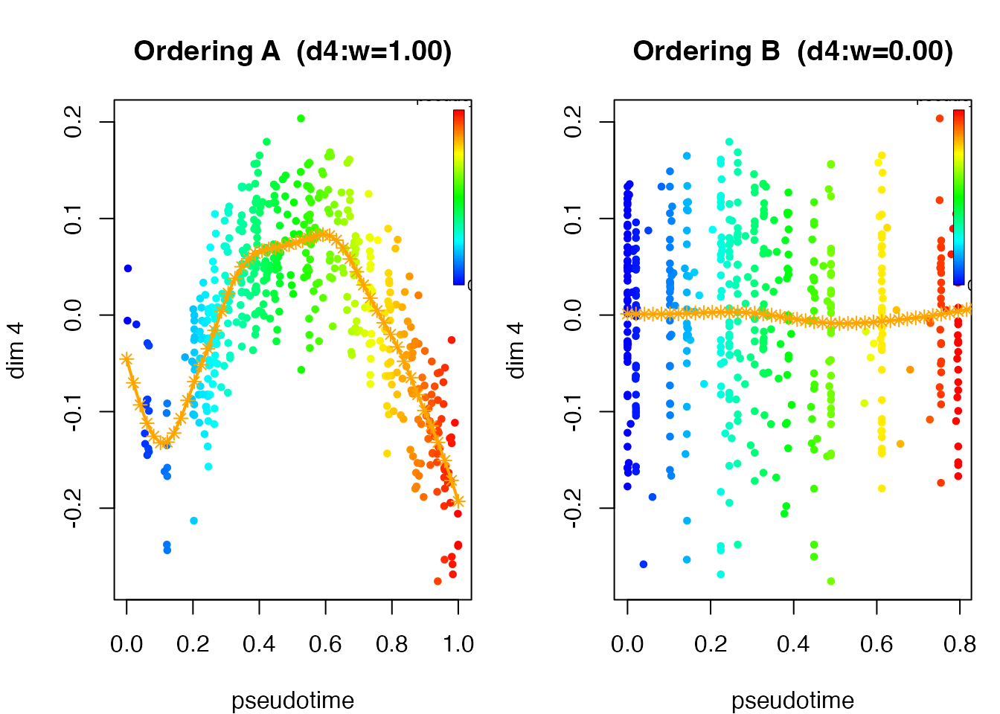
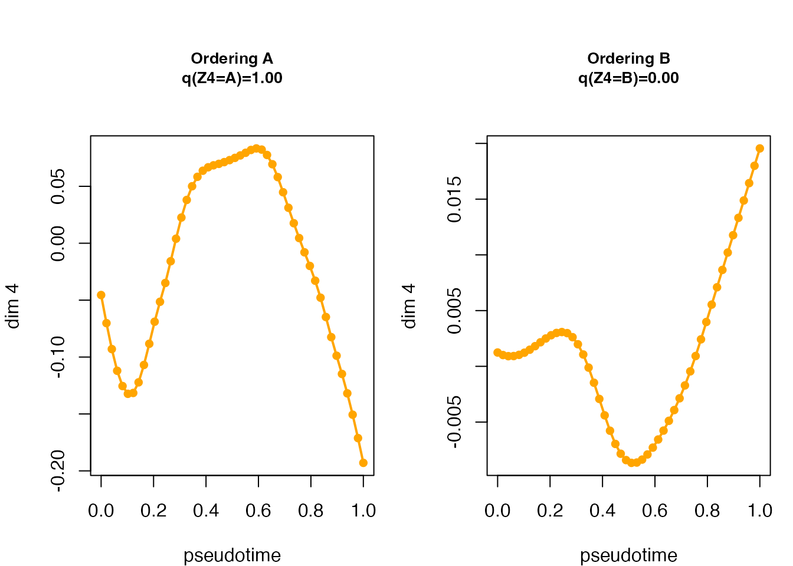
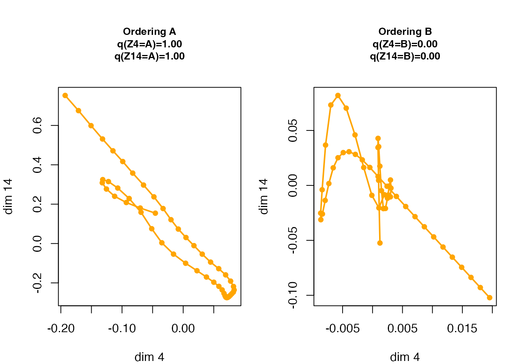

When to use multiple orderings
Different groups of features can reflect different patterns among the same samples. For example, one group of genes may track cell differentiation while another tracks a separate cell-state axis. A feature-partition model estimates several sample orderings and the probability that each feature follows each one.
Set intrinsic_dim = M to specify the number of
orderings. The fit returns sample positions along each ordering, smooth
feature trajectories conditional on each assignment, and assignment
probabilities that quantify support for the feature groups.
This tutorial starts with a two-ordering example, shows how to interpret its results, and then explains the model and structural variational updates.
Fit a two-ordering model
We simulate 500 samples with two groups of ten features. The groups vary along different latent orderings, with quadratic and monotone trajectory families.
sim <- simulate_dual_trajectory(
n = 500,
d1 = 10,
d2 = 10,
d_noise = 0,
sigma = 0.05,
trajectory_family = c("quadratic", "monotone"),
seed = 1
)
X <- sim$X
truth <- sim$true_assignFit two orderings using 50 grid positions and a second-order random-walk prior. The default initialization groups similar features and uses PCA to initialize a sample ordering within each group.
fit_partition <- fit_mpcurve(
X,
intrinsic_dim = 2,
method = "PCA",
K = 50,
rw_q = 2,
ridge = 0,
verbose = FALSE
)Interpret feature assignments
fit_partition$partition$pi_weights is a
feature-by-ordering matrix: entry (j,m)
is the fitted probability q(Z_j=m) that
feature j follows ordering m. Each row sums to one. A row concentrated
on one ordering gives a clear assignment; a diffuse row indicates that
several orderings describe the feature similarly well.
head(fit_partition$partition$pi_weights)
#> A B
#> [1,] 1 0.000000e+00
#> [2,] 0 1.000000e+00
#> [3,] 1 0.000000e+00
#> [4,] 1 1.508606e-216
#> [5,] 0 1.000000e+00
#> [6,] 0 1.000000e+00
table(fit_partition$partition$assign)
#>
#> A B
#> 10 10The labels in partition$assign select the most probable
ordering for each feature. For this simulation we can compare those
labels with the generating groups, allowing for an exchange of the two
ordering labels.
pred <- as.character(fit_partition$partition$assign)
truth <- as.character(truth)
accuracy <- max(mean(pred == truth), mean(pred != truth))
cat("Partition accuracy:", round(accuracy, 4), "\n")
#> Partition accuracy: 1Inspect sample orderings and trajectories
plot(fit_partition, dims = 4) displays the observed
values of feature 4 against the inferred sample positions for each
ordering, together with its fitted trajectory. The objective plot shows
progress over fitting iterations.
plot(fit_partition, plot_type = "elbo")Variational objective over fitting iterations and observed feature values along each inferred ordering.
plot(fit_partition, dims = 4)
Variational objective over fitting iterations and observed feature values along each inferred ordering.
To focus on trajectory shape, use plot_type = "mu".
Panel m displays the conditional
posterior mean E[U_j\mid Z_j=m] against
normalized latent position. The assignment probability in the panel
title indicates how strongly the data support that ordering for the
selected feature.
plot(fit_partition, plot_type = "mu", dims = 4)
Conditional mean trajectory of feature 4 under each ordering; panel titles report assignment probabilities.
Each curve answers: what trajectory is estimated if this feature follows this ordering? A low-probability panel describes an alternative assignment and should be interpreted with that probability in view.
With two selected features, each panel traces their conditional means against one another across the latent grid. This shows the joint path implied by placing both features on that ordering. Check both assignment probabilities when interpreting the path.

Conditional mean paths for features 4 and 14 under each ordering.
Extract results
The following fields support further analysis:
| Quantity | Field |
|---|---|
| Sample positions for ordering m | locations[[m]]$mean$pseudotime |
| Feature-assignment probabilities | partition$pi_weights |
| Most probable feature assignments | partition$assign |
| Conditional trajectory means | conditional_posterior$mean[[m]] |
| Trajectory covariance for feature j, ordering m | conditional_posterior$cov[[m]][[j]] |
| Feature noise variances, shared across orderings | params$sigma2 |
| Feature-by-ordering smoothness parameters | lambda_mat |
Sample positions are normalized to [0,1]. Ordering labels and directions are
arbitrary; use sample annotations to interpret the axes and align
orderings when comparing fits. See ?mpcurve for the
complete object description.
Assess convergence and continue fitting
Fitting begins with an annealing schedule that encourages diffuse
feature assignments, followed by coordinate updates at temperature T=1. Inspect objective_history
together with temperature_history: the T=1 segment tracks improvements in a common
objective. Values from different temperatures correspond to different
objectives.
t1_objective <- fit_partition$objective_history[
fit_partition$temperature_history == 1
]
cat("Recorded T=1 objective values:", length(t1_objective), "\n")
#> Recorded T=1 objective values: 101
cat("Final objective increments:\n")
#> Final objective increments:
tail(diff(t1_objective))
#> [1] 0.8311716 0.7412944 0.7044794 0.6753721 0.6311281 0.5810605If the increments remain appreciable at the iteration limit, run additional iterations:
fit_partition <- do_mpcurve(fit_partition, iter = 10)This refines the orderings, trajectories, assignments, and estimated parameters at T=1, extending the objective history.
Choose fitting settings
Number of orderings
intrinsic_dim determines the number of orderings and
stays fixed during fitting. Choose values that address the scientific
question, then examine the stability of feature groups and their
interpretation across fits. The structural objective assesses
convergence for a given M; it does not
include a complexity penalty for comparing different values of M. Use a separate predictive or
model-selection assessment for that comparison.
Initialization
The default partition_init = "similarity" clusters
features by similarity and initializes one ordering per feature group.
Alternatively, partition_init = "ordering_methods" uses the
specified ordering methods:
fit3 <- fit_mpcurve(
X,
intrinsic_dim = 3,
partition_init = "ordering_methods",
method = c("fiedler", "PCA", "PCA"),
K = 16
)Compare several initializations when trajectories are non-monotone or groups are weakly separated. Within a common model and fitting configuration, compare final T=1 objective values as well as the resulting orderings and feature assignments.
Noise and smoothness
By default, the model estimates one noise variance per feature,
shared across orderings. sigma2_init supplies a scalar or a
vector of initial feature variances. Alternatively, supply known
measurement standard deviations through S, as a
feature-specific vector or a matrix matching X. In that
case params$sigma2 is NULL, and the supplied
measurement errors determine the likelihood variances.
lambda initializes the smoothness parameters. Larger
values give stronger smoothing; fix_lambda = TRUE holds
them fixed during fitting. An optional lambda_sd_prior_rate
encourages smooth trajectories while allowing their smoothness
parameters to be estimated.
Statistical model
Let C_i^{(m)} be the latent grid position of sample i along ordering m, and let Z_j\in\{1,\ldots,M\} identify the ordering followed by feature j. The position and feature-assignment probabilities are \Pr(C_i^{(m)}=k)=\pi_{mk} and \Pr(Z_j=m)=\omega_m. Conditional on these assignments,
x_{ij}\mid Z_j=m,\; C_i^{(m)}=k,\; U_j \sim N(u_{jk},\sigma_j^2).
Each feature has a trajectory U_j whose prior smoothness depends on its ordering:
p(U_j\mid Z_j=m,\lambda_{jm}) \propto \exp\!\left(-\frac{\lambda_{jm}}{2}U_j^TQ_KU_j\right).
Q_K is the random-walk precision matrix. Its quadratic form penalizes variation along the ordered grid. With known measurement standard deviations, replace \sigma_j^2 by v_{ij}=S_{ij}^2 (or S_j^2 for a feature-specific vector).
Structural variational inference
MPCurver approximates the posterior by
q(C,Z,U) = \prod_{m=1}^M\prod_{i=1}^n q(C_i^{(m)}) \prod_{j=1}^d q(Z_j)q(U_j\mid Z_j).
Write q(C_i^{(m)}=k)=r_{imk}, q(Z_j=m)=w_{jm}, and
q(U_j\mid Z_j=m)=N(\mu_{jm},V_{jm}).
The conditional Gaussian distributions describe the possible trajectory shapes under each feature assignment. Preserving this dependence allows assignment uncertainty and trajectory uncertainty to be represented together. Coordinate updates alternate between trajectories, sample positions, feature assignments, and model parameters.
Conditional trajectory update
Let R^{(m)}=(r_{imk}) and N_{mk}=\sum_i r_{imk}. With estimated feature variance,
A_{jm} = \lambda_{jm}Q_K +\operatorname{diag}\!\left(\frac{N_m}{\sigma_j^2}\right), \qquad b_{jm} = \frac{(R^{(m)})^T X_{\cdot j}}{\sigma_j^2},
and
V_{jm}=A_{jm}^{-1},\qquad \mu_{jm}=V_{jm}b_{jm}.
These updates combine the smoothness prior with the full likelihood conditional on Z_j=m. Thus each possible assignment has its own trajectory estimate and covariance, including assignments with small w_{jm}.
With known variances v_{ij}, the likelihood terms become
A_{jm} = \lambda_{jm}Q_K +\operatorname{diag}_k\sum_i\frac{r_{imk}}{v_{ij}}, \qquad b_{jmk}=\sum_i\frac{r_{imk}x_{ij}}{v_{ij}}.
Ordering responsibilities
The sample-position update weights each feature’s contribution by its assignment probability:
\log r_{imk} \stackrel{+}{=} \log\pi_{mk} -\frac12\sum_j w_{jm} \frac{(x_{ij}-\mu_{jmk})^2+V_{jm,kk}}{\sigma_j^2},
where \stackrel{+}{=} denotes equality up to a normalizing constant in k. A feature with large w_{jm} strongly informs ordering m. The term V_{jm,kk} propagates trajectory uncertainty into the position update. For known measurement variances, replace \sigma_j^2 by v_{ij}.
Shared feature variance
For estimated noise, define
E_{jm} = \sum_{i,k}r_{imk} \left[(x_{ij}-\mu_{jmk})^2+V_{jm,kk}\right].
The variance update averages the expected squared residuals across ordering assignments:
\sigma_j^2 = \frac1n\sum_{m=1}^M w_{jm}E_{jm}.
This gives one noise scale for each feature. When measurement
variances are supplied through S, those variances are used
directly.
Feature assignments
Assignment probabilities balance expected data fit, trajectory smoothness, and posterior uncertainty. Define
G_{jm}=\mu_{jm}^TQ_K\mu_{jm}+\operatorname{tr}(Q_KV_{jm}).
With estimated noise, precision rank r, and generalized determinant |Q_K|_+, the local objective for feature j under ordering m is
\begin{aligned} B_{jm} =\;&-\frac n2\log(2\pi\sigma_j^2) -\frac{E_{jm}}{2\sigma_j^2}\\ &+\frac12\left[ r\{\log\lambda_{jm}-\log(2\pi)\} +\log|Q_K|_+ -\lambda_{jm}G_{jm} \right]\\ &+\log p(\lambda_{jm}) +\frac12\left[K\log(2\pi e)+\log|V_{jm}|\right]. \end{aligned}
The terms are the expected likelihood, expected trajectory log prior, optional smoothness-parameter log prior, and Gaussian entropy. The default smoothness-parameter penalty is zero. At annealing temperature T,
w_{jm} \propto \exp\left\{ \frac{\log\omega_m+B_{jm}}{T} \right\}
for a fixed or empirically estimated ordering prior \omega. At T=1, these are the feature-assignment updates for the structural variational objective.
Intrinsic random-walk prior
The default ridge = 0 gives an intrinsic random-walk
prior. Q_K is rank deficient, and the
likelihood provides information about the unpenalized directions. The
conditional posterior is proper when \lambda_{jm}Q_K+D_{jm} is positive definite,
equivalently when
\ker(Q_K)\cap\ker(D_{jm})=\{0\},
where D_{jm} is the diagonal
likelihood precision in the trajectory update. This is the same
identification condition as in the single-ordering model. A positive
ridge adds a diagonal term to Q_K and gives a proper Gaussian trajectory
prior.
For an intrinsic prior, the objective uses the rank and generalized determinant of Q_K, with a fixed reference measure on the null space. It supports fitting and convergence assessment for the specified model; an ordinary marginal-likelihood interpretation requires a proper prior.